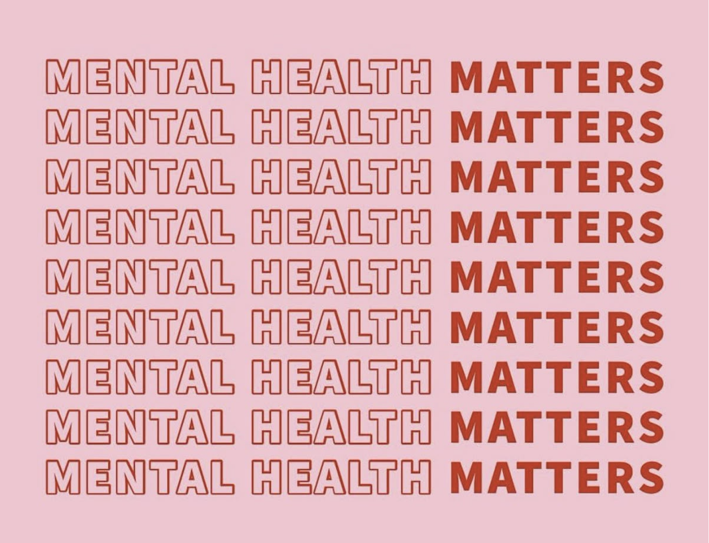
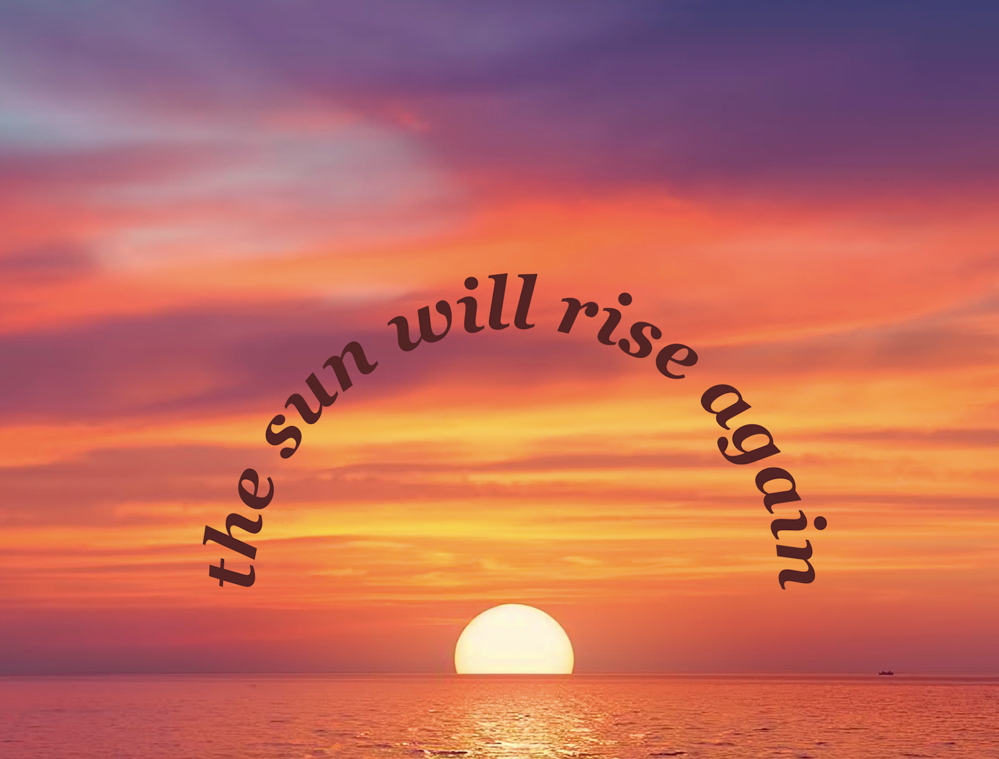

Hvad er mental sundhed?

Mental sundhed kan kendetegnes af en tilstand, hvor man blandt andet har overskud til sociale relationer og til hverdagsopgaver. Hvis man oplever at have det dårligt mentalt, vil det modsatte gælde - hvor man ikke kan håndtere belastninger, trækker sig fra relationer og ikke kan fungere i sin dagligdag. (Hvad er mental sundhed? | Mental Sundhed 2026)
Vi lever i et samfund hvor mange mennesker er ramt af perioder af dårlig mental sundhed. Mere end hver femte unge mellem 16 og 29 oplevede mistrivsel i 2021. Antallet af unge med en psykiatrisk diagnose er steget omkring 40% i de seneste 10 år. Statistikkerne bliver ikke bedre hvis vi kun kigger på tallene for kvinder - her er mere end hver tredje unge kvinde ramt af mistrivsel. (Anna Mertz Poulsen et al. 2025) En anden undersøgelse blandt gymnasieelever fra 2019 viste, at 35% af drengene og 55% af pigerne følte sig stressede dagligt eller ugentligt.(Lene Kierkegaard et al. 2020) Undersøgelserne peger altså på en tydelig forværring af unges mentale helbred. En vigtigt pointe at have med er at kvinder er overrepræsenteret i statistikkerne,hvilekt kan skyldes at mange mænd bliver mødt med en forventning om at de skal være stærke og undlade at vise sårbarhed. Maskulinitetsnormer har lært mænd at de skal klare sig selv, hvilket i værste tilfælde kan føre til alvorligt misbrug og selvmordsforsøg, før de søger hjælp. (Signe Korsgaard 2023)
Jeg kan selv huske, da jeg gik i gymnasiet, hvor jeg følte mig stresset. Jeg trivedes ikke i min hverdag, men følte mig meget alene i den følelse. Der var ikke nogen af mine venner eller klassekammerater der virkede til at at have det svært. den følelse havde lige indtil jeg turde at spørge ind til hvordan de andre havde det og at jeg syntes det var presset at skulle nå det hele. først der gik det op for mig at de andre havde det ligesom mig. jeg blev mere rolig, fordi jeg ikke længere følte mig alene. Det er vigtigt at vi kan spejle os i andre, da det at føle sig anderledes kan forstærke følelsen af at være alene i situationen. (Berger, Jensen, and Morville 2023)
Min egen historie
Jeg har selv været ramt af flere forskellige psykiske sygdomme og ved hvor svært det er at stå i. Man kan føle sig helt alene i verden og nogle gange kan det virke som om man er den eneste der står i den situation. Det allervigtigste jeg tager med mig fra mine sygdomsforløb er at det ALTID bliver bedre og det er nødt til at tro på selv i de mørkeste stunder. Nogle gange tager det længere tid, end man kunne håbe på, men man er nødt til at blive ved. Det er den hårdeste kamp at vinde, men der er lys på den anden side. Du må aldrig være bange for eller for stolt til at bede om hjælp, det er det modigste du kan gøre - uanset om det er familie, venner eller professionelle. Mest af alt, håber jeg at dette kan give noget håb - både at vide at du ikke er alene, der er mange der kæmper med samme udfordringer som dig selv.

Jeg håber at du kunne bruge mit opslag til noget positivt og går herfra med et lidt lettere hjerte. Alting tager tid, men ligesom man kan blive ramt af en fysisk skade og genoptræne sig tilbage til normalen, fungerer det på samme måde med psykiske udfordringer. Man ved aldrig, hvem der er ramt af mental udfordringer, så mød andre med lidt mere kærlighed.
Tak fordi du læste med, de varmeste kram, Mie